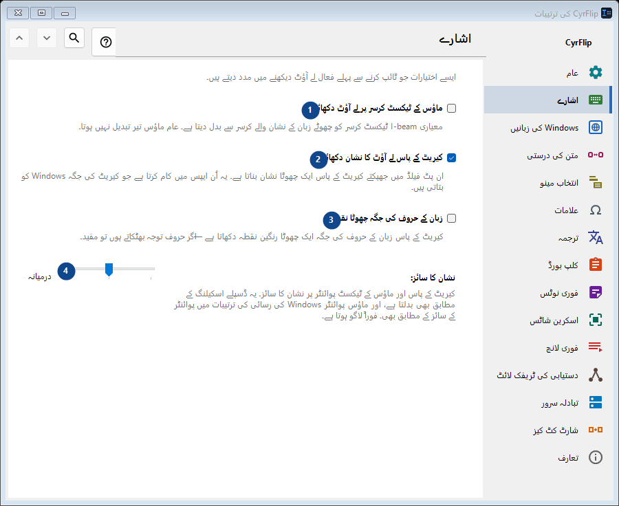
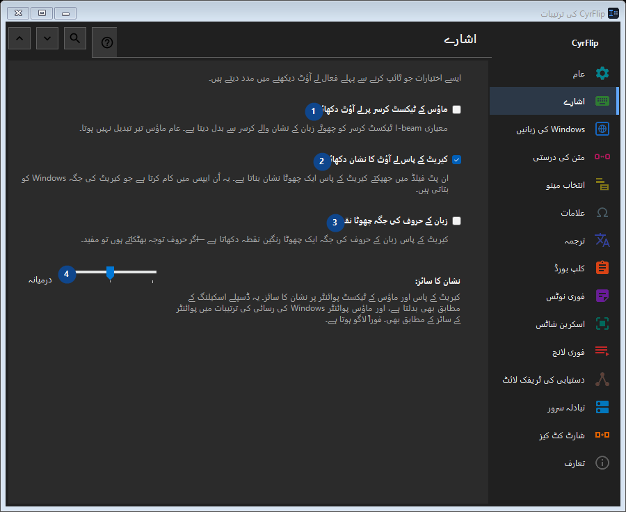

اشارے
مقصد
ایسے اختیارات جو ٹائپ کرنے سے پہلے فعال لے آؤٹ دیکھنے میں مدد دیتے ہیں۔


استعمال کی ترتیب
ترتیبات فوراً لاگو ہوتی ہیں۔ کوئی لازمی ترتیب نہیں؛ نیچے کے گروپ استعمال کریں۔
عناصر
1. ماؤس کے ٹیکسٹ کرسر پر لے آؤٹ دکھائیں
معیاری I-beam ٹیکسٹ کرسر کو چھوٹے زبان کے نشان والے کرسر سے بدل دیتا ہے۔ عام ماؤس تیر تبدیل نہیں ہوتا۔
آپ کے شارٹ کٹ2. کیریٹ کے پاس لے آؤٹ کا نشان دکھائیں
ان پٹ فیلڈ میں جھپکتے کیریٹ کے پاس ایک چھوٹا نشان بناتا ہے۔ یہ اُن ایپس میں کام کرتا ہے جو کیریٹ کی جگہ Windows کو بتاتی ہیں۔
آپ کے شارٹ کٹ3. زبان کے حروف کی جگہ چھوٹا نقطہ
کیریٹ کے پاس زبان کے حروف کی جگہ ایک چھوٹا رنگین نقطہ دکھاتا ہے — اگر حروف توجہ بھٹکاتے ہوں تو مفید۔
آپ کے شارٹ کٹ4. نشان کا سائز
ساتھ کے لیبل کے مطابق قدر منتخب یا درج کریں۔ آگے بڑھنے سے پہلے جانچیں۔
آپ کے شارٹ کٹ